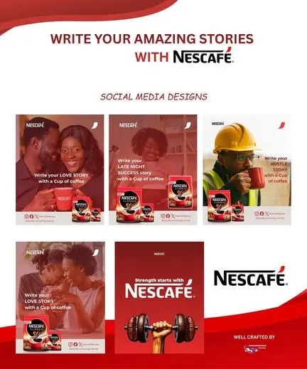

Skip to content
Home
About
Subsidiaries
Work
Contact
Menu

All work
Digital
Campaign title
Client
Category
Channels
01 · The brief
What needed to change.
02 · Audience insight
The human truth.
03 · Strategic thinking
The way into the problem.
04 · Creative idea
The idea.
05 · Execution and results
Making it real.
Campaign journey
From problem to presence.
←
Pause
→
Slide 1 of 3
Next project
Explore more work
↗